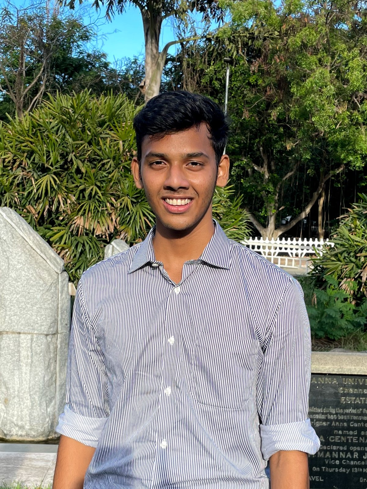
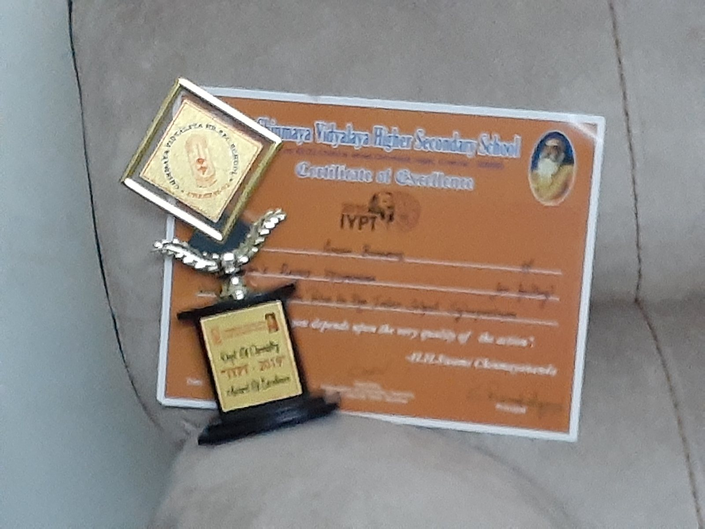

About
About
I'm a mechanical engineer who builds AI for engineering design. My systems rebuild editable CAD from scans and drawings, inspect cast parts for defects, and let designers at TE Connectivity build busbars in minutes instead of days. I've published at SGP and in the Journal of WSCG, and my latest paper is in preparation for CVPR 2027.
I started with hardware. At fifteen I built a small hydrogen jet with a school friend, and wired its control indicators into a heads-up display, my attempt at the displays in the films I grew up on. It didn't look like the films, but the jet ran. I built in versions. An electric bike, rebuilt for the next exhibition with piezo transducers on the wheel, won the CBSE National Science Exhibition, and the tyre idea came back in college as E-Metric.
Each time I understood more about the world, I built for more people: truck loaders, farmers, neurodivergent people, and now engineers in industry.
What I'm working towards hasn't changed much since that helmet: a computer that understands the physical thing in front of you. I just know a lot more now about which pieces are missing.

1Positions
- Apr 2023 – nowResearch Intern, then Research Associate Advanced Geometric Computing Lab, Department of Engineering Design, IIT Madras. With Prof. Ramanathan Muthuganapathy. Two publications and a third paper in preparation. Reproduced and benchmarked more than 70 published models in point-cloud learning, cross-modal retrieval, generative modelling and reinforcement learning.
- Aug 2025 – nowProject Associate ADOPT Lab, Department of Engineering Design, IIT Madras. With Prof. Palaniappan Ramu and Prof. G. Saravana Kumar. Led three sponsored industry engagements end to end: requirements with the partner's engineers, system and data-pipeline design, the prototype, and the written case put to the customer. Includes a Research Intern appointment at TE Connectivity India, Aug – Dec 2026.
- Nov 2024 – Aug 2025Co-Founder and Lead Engineer, desAIgn works AI-powered CAD automation. With Prof. Ramanathan Muthuganapathy, Prof. Palaniappan Ramu and Dr. Anand Ramani, formerly Chief Scientist at GE. Project page
- Sep 2021 – Oct 2022Core-team member, Team MOVIS An inter-college student team based at VIT Chennai. E-Metric and PackMax.
2Education and self-study
- 2021 – 2025B.E. Mechanical Engineering Madras Institute of Technology, Anna University, Chennai. CGPA 8.38/10, First Class.
- SchoolBharatiya Vidya Bhavan's Rajaji Vidyashram Chennai. CBSE.
- 2023Deep Learning Specialization DeepLearning.AI. Five courses, 96% overall.
- 2023Machine Learning Specialization Stanford Online and DeepLearning.AI. Three courses, 100% overall.
- 2023Algorithm Design, Kleinberg and Tardos Implemented the algorithms from the book in Python.
3Awards
- 2026Eurographics Widening Participation Scholarship To present MM-CAD at SGP 2026 in Bern.
- 2023Global Top 100, GDSC Solution Challenge Google. For StimMate, with Ritwika Panda.
- 2022Tamil Nadu Student Innovators Award and a ₹1 lakh grant EDII Tamil Nadu. For Kishan Know.
- 2022National 2nd place in two tracks, IIT Bombay Ideate PackMax and Electrifying Transportation (E-Metric), with Team MOVIS.
- 2018–19Winner, CBSE National Level Science Exhibition For the E-Bike, with Devam Y Patel.
- 2016–19Eight state-level first places School science exhibitions. The list is below.
4School 2016 to 2020
I was at Bharatiya Vidya Bhavan's Rajaji Vidyashram in Chennai. The E-Bike and Project Iron Man, both built with Devam Y Patel, came out of these years.
Science exhibitions and symposia
- Prayoga 2018, Pratyusha Engineering College: 1st place, state level
- Aaruush 2018, SRM: 1st place, inter-school
- Vigyaan Pradarshini 2018: 1st place
- TechZeal 2018, Sathyabama: winner, regional
- CBSE Regional Science Exhibition, Jan 2019, then the National in Noida, Feb 2019: winner
- Prayoga 2019: 3rd place
- IYPT symposium 2019, Chinmaya Vidyalaya: Certificate of Excellence
- CBSE state-level exhibition 2020: qualified for the nationals
- Science Day 2020: 1st place, intra-school
Clubs, teams and Scrabble
- Head of R&D, school Science Club, 40+ members, Oct 2019 to Oct 2020
- Founded and led a 14-person team for the Asian Regional Space Settlement Design Competition
- Scrabble: 10th at the National Championship 2016, 7th at the regional 2016, 3rd inter-school 2020

5Languages
English (fluent), Telugu (native), Tamil and Hindi (conversational).
6Contact
- Emailanushbharathi2411@gmail.com
- GitHubgithub.com/exanos
- LinkedInlinkedin.com/in/exanos
- LabAdvanced Geometric Computing Lab, Department of Engineering Design, IIT Madras, Chennai